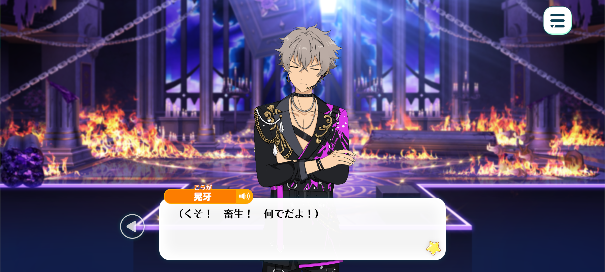
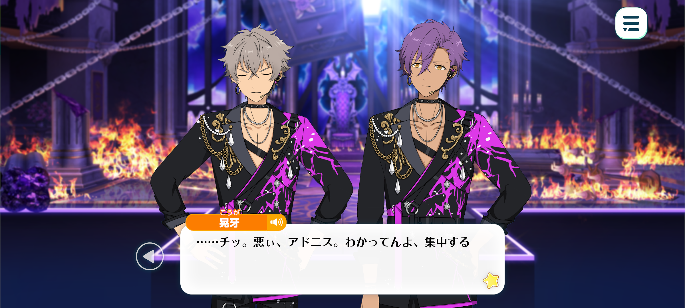
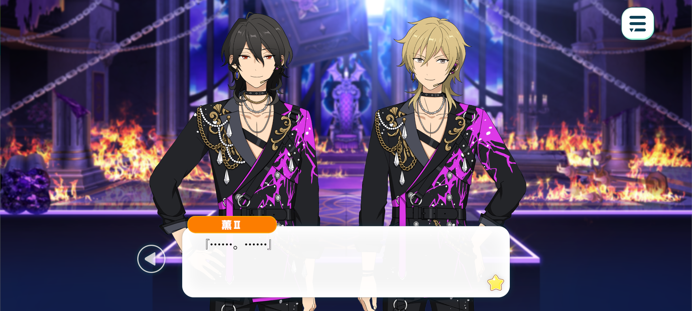

PSYCHOBREAK — Chapter 14


Time: Present day. Two weeks after HELLSING, UNDEAD's new direction, began operating
Location: One of the venues on HELLSING's national tour in the Tohoku region

Koga: "♪~♪~♪"
(Fuck! Shit! Why?!)
(Why the hell am I so pissed off!?)
(This is supposed to be a dream come true!)
Rei 2: "♪♪♪♪♪"
Kaoru 2: "♪♪♪♪♪"
Koga: (Ahh, that deep, heavy bass! It feels like my whole body might fall apart! Rock 'n' roll that shakes you right down to your soul!)
(The crowd's going wild, stomping their feet! This is a fucking party from hell!)
(I'm the one who's gonna do it! UNDEAD and I are gonna shake the whole world with the greatest, most powerful rock there is!)
(This is what I've always wanted, isn't it!? I've been pissed off for ages because my senpais were so obsessed with all that trivial crap, never seeing eye to eye with me!)
(I got impatient, unhappy, and angry!)
(And yet! Even if they're fakes, now I've got a bunch of convenient bastards around me who'll do exactly what I want!)
(I'm finally makin’ the music I've wanted to make from the very beginning! The greatest music there is!)
(So why are you actin’ like this…! Hey, hey, Oogami Koga? What are you, some puppy that's been abandoned out in the rain!?)
(So why do I feel like this...? Why does it feel like I'm standing on this stage all alone—)

Adonis: Oogami.
Koga: …Tch. My bad, Adonis, I know. I’ll focus up.
Adonis: I can see that you're not at your best today, but that's not what I wanted to talk about. I'm not exactly in top form myself.
I think it's important to look at your own shortcomings before pointing out anyone else's. There's always something you can learn from someone else's mistakes, after all.
Koga: You're still the same as ever. It's reassuring, Adonis.
Adonis: I like to think I’ve grown somewhat.
Koga: It's the way you are deep down that hasn't changed. I'm kinda jealous, Adonis.
I’m no good. I don’t even understand myself.
We're on the biggest national tour UNDEAD's ever had. This is what I've always dreamed of, and yet... I can't seem to settle down.
I feel like I've gone right back to being a beginner. Like I'm standin’ onstage with you guys for the very first time.
Hey, how did we get through it back then? Was it because Sakuma-senpai came rushin’ to our rescue at the last minute, like he always does?
Adonis: I remember it a little differently. Sakuma-senpai never actually came onstage during our debut performance. Not even by the end.
But it didn't matter. The delinquents never showed up for the contest. Or rather, they just laughed it off and ignored it completely. We ended up winning by default.
Of course, we had no way of knowing that would happen. At the time, you, Hakaze-senpai and I each did what we thought was right.
We didn't run away. We stood our ground and fought.
That's why we won. No blood was shed, but a victory is still a victory.
That day will always be where it all began for me. It's something I'll always be proud of.
Even now, just like I did back then, I do everything I can with what I have, here and now.
Koga: Haha. Yeah. That's right. You've always been like that.
Like at last year's RepayFes. And even further back, when I got lured out and turned into a punching bag for fine...
No matter how badly we got beaten, you never gave up. You stuck by my side right to the end.
Thanks, Adonis.
I'm okay now. As long as you're here, I'll be fine.
With you by my side, I've got nothin' to worry about!
"♪~♪~♪"
Adonis: …No, thank you, Oogami. It makes me very happy to hear you say that.
I feel truly blessed to hear those words from you. But that's not what I wanted to talk about.
Koga: Huh?
Adonis: Something's wrong with our senpais.
Koga: …!?

Rei 2: "♪~..."
Kaoru 2: "… …"
Koga: Huh!? W-w-what are you doin’, fake senpais!
They’ve gone all stiff and jerky— h-has somethin’ broke!?
Adonis: They're remarkably sophisticated machines... I've kept myself in good shape through all my training, so I can still manage, but I don't think these machines were built to withstand the strain of touring.
Koga: Shit, pull yourselves together, you clankers! We’re still on tour! You can’t break down now!?
Adonis: Don't draw attention to them, Oogami. We don't want anyone noticing. Let's keep the audience distracted before they notice anything weird, and before our senpais completely malfunction.
This is the perfect moment to move on to the next song. We can release a large amount of smoke as part of the stage effects, so the audience won't be able to see our senpais...
Hm? The stage is filling with smoke already, without us having to do anything...?
Koga: D-did some quick-thinking member of the staff realise what was happening and set off the smoke effects for us?!
No, that can't be right. We're the only ones who know those aren't our real senpais... right?